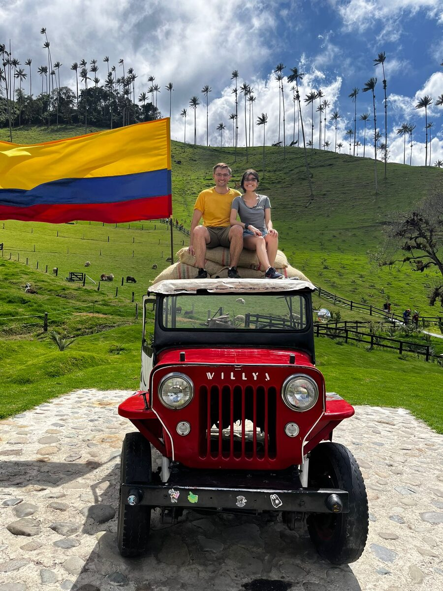
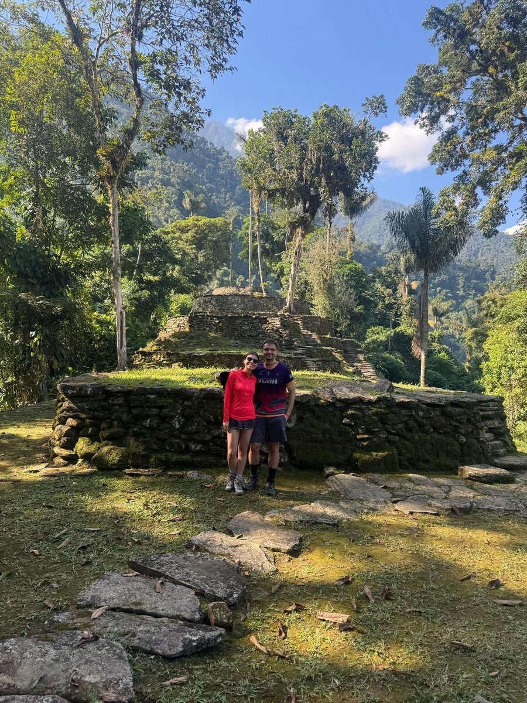
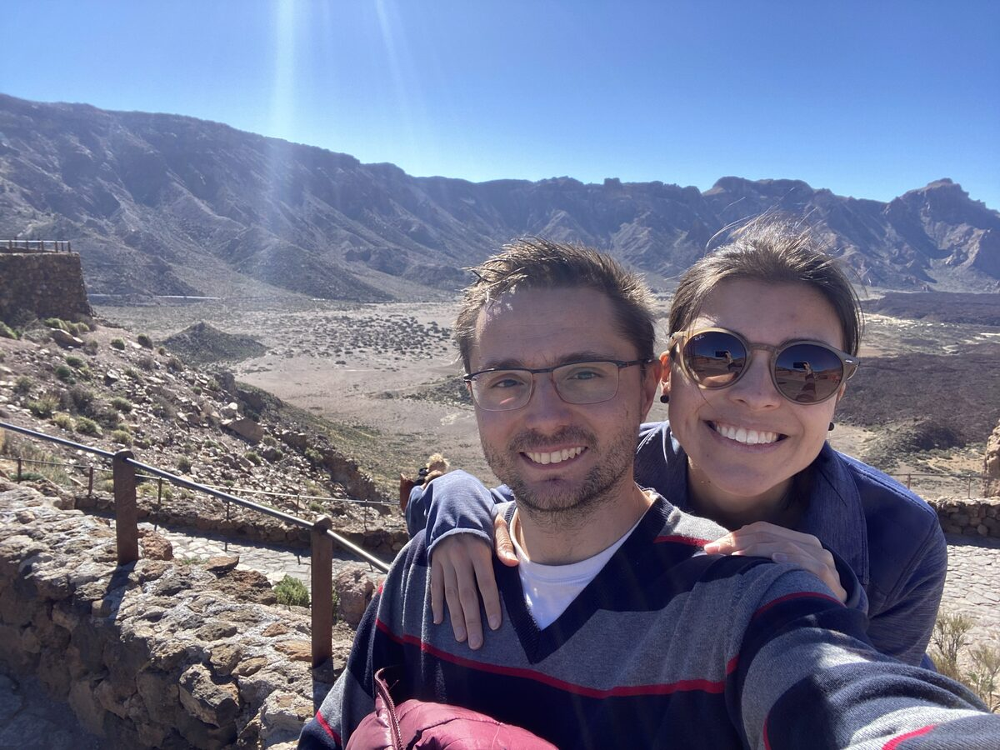
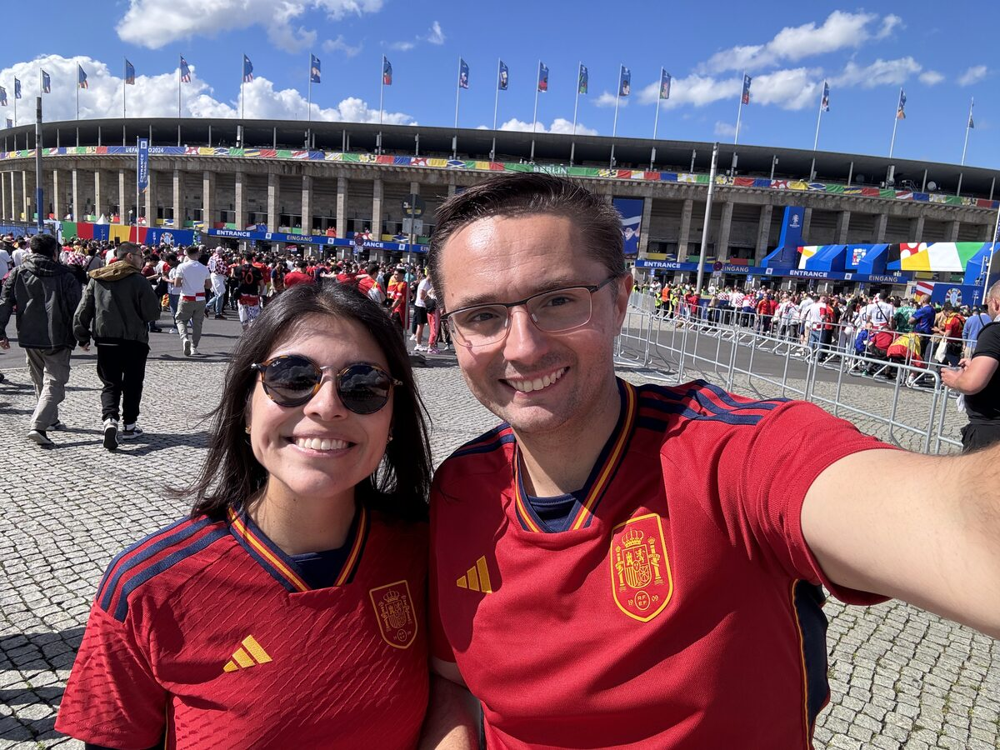

«Asilo» · Jorge Drexler & Mon Laferte




¡Nos casamos! Y en una ceremonia religiosa en la sabana de Bogotá, entre montañas verdes y aire frío. En esta página encontrarán todo lo que necesitan: los detalles del día, cómo llegar a la hacienda, dónde dormir si quieren quedarse y el formulario para confirmarnos su asistencia.
We're getting married! In a religious ceremony on the savanna outside Bogotá, among green mountains and cool air. This page has everything you need: the details of the day, how to reach the hacienda, where to stay if you'd like to, and the form to let us know you're coming.
Muchos de ustedes van a cruzar medio continente —o un océano— para acompañarnos. Para ustedes hay unas secciones extra más abajo, con todo lo práctico de Colombia: vuelos, entrada al país, hospedaje y qué empacar. Empiecen por el abrigo: es un lugar un poco inesperado para quien imagina Colombia como puro calor. De día ronda los 18 °C, pero al caer el sol baja a 8 °C.
Many of you will cross half a continent — or an ocean — to be with us. There are extra sections here for you, with the practical side of Colombia: flights, entry requirements, where to stay and what to pack. Start with a coat: this is a surprising place for anyone who pictures Colombia as nothing but heat. Days hover around 18 °C, but once the sun goes down it drops to 8 °C.
Con cariño,With love,
Luisa & Ricardo
Hacienda La Victoria, en Subachoque, Cundinamarca, en plena sabana. La ceremonia y la fiesta son en el mismo lugar, así que no tendrán que moverse en todo el día.
Hacienda La Victoria, in Subachoque, Cundinamarca, out on the savanna. The ceremony and the party are in the same place, so you will not have to move all day.
Será religiosa, a las 4:00 de la tarde. Les pedimos estar sentados unos minutos antes.
It will be a religious ceremony at 4:00 in the afternoon. Please be seated a few minutes beforehand.
Después, el cóctel y la fiesta son en la misma hacienda: no hay que moverse en todo el día.
The cocktail hour and the party follow in the same place, so there is no moving around during the day.
En la vereda, a unos 3,5 km del casco urbano de Subachoque.
Out in the countryside, about 3.5 km from the town of Subachoque.
Abrir la ubicación en Google MapsOpen the location in Google Maps
Quien prefiera no manejar puede contratar el traslado de ida y vuelta por su cuenta con TransRubio, escribiendo a cotizaciones@transrubio.com.co.
If you would rather not drive, you can arrange return transport yourself with TransRubio, writing to cotizaciones@transrubio.com.co.
Es una gestión independiente de la boda: ellos les cotizan directamente.
This is arranged independently of the wedding — they will quote you directly.
Ellos, traje formal. Ellas, cóctel o vestido largo.
Men, formal suit. Women, cocktail or long dress.
Todo pasa por Bogotá. Desde ahí son poco más de 60 minutos hasta Subachoque.
Everything goes through Bogotá. From there it is a little over 60 minutes to Subachoque.
El aeropuerto es El Dorado (BOG), en Bogotá. Es el hub más grande de la región y tiene vuelos directos desde Madrid, Miami, Nueva York, Ciudad de México, São Paulo, Buenos Aires, Santiago, Lima, Panamá y varias ciudades más.
The airport is El Dorado (BOG), in Bogotá. It is the largest hub in the region, with direct flights from Madrid, Miami, New York, Mexico City, São Paulo, Buenos Aires, Santiago, Lima, Panama City and several more.
En Bogotá funcionan Uber, DiDi, Yango e InDrive, además de los taxis oficiales del aeropuerto.
Uber, DiDi, Yango and InDrive all work in Bogotá, alongside the official airport taxis.
Nada de taxis levantados en la calle: usen siempre la app y, antes de subirse, confirmen que la placa y el modelo coincidan con los de la pantalla.
Never flag down a taxi in the street: always use the app, and before getting in, check that the plate and the model match what is on your screen.
Dos opciones según lo que busquen. Reserven pronto: Subachoque es un pueblo pequeño y la oferta cercana se agota rápido.
Two options, depending on what you are after. Book early: Subachoque is a small town and the places nearby fill up fast.
Hoteles boutique, hosterías y casas de campo. Chía y Tabio quedan a 25–45 minutos, con buena relación calidad-precio, restaurantes agradables y ambiente de sabana. Ideal si alquilan carro. Subachoque es más cerca pero tiene menos opciones; si lo prefieren, busquen habitación con tiempo.
Boutique hotels, country inns and farmhouses. Chía and Tabio are 25–45 minutes away, good value, with pleasant restaurants and open savanna around them. Ideal if you rent a car. Subachoque is closer but has fewer places; if you prefer it, book a room well in advance.
Más lejos (1 h – 1 h 45) pero con toda la oferta de restaurantes, museos y vida de ciudad. Recomendamos las zonas de Usaquén, Zona G / Chicó o Parque de la 93: seguras, caminables y bien conectadas.
Further out (1 h – 1 h 45) but with all the restaurants, museums and city life. We recommend Usaquén, Zona G / Chicó or Parque de la 93: safe, walkable and well connected.
Consejo: si vienen en grupo o en familia, Airbnb funciona muy bien en la sabana — hay fincas completas por precios razonables. Y si se quedan en Bogotá, elijan hotel en el norte de la ciudad: acorta el trayecto a Subachoque y evita el peor tráfico.
A tip: if you are coming as a group or a family, Airbnb works very well on the savanna — whole farmhouses at reasonable prices. And if you stay in Bogotá, pick a hotel in the north of the city: it shortens the drive to Subachoque and avoids the worst traffic.
Alguna información si es tu primera vez en Colombia.
A few things worth knowing if it is your first time in Colombia.
Bogotá y Subachoque están a unos 2.650 m. Algunas personas sienten soroche: dolor de cabeza, cansancio o falta de aire los primeros días.
Bogotá and Subachoque sit at about 2,650 m. Some people feel soroche: headaches, tiredness or shortness of breath for the first few days.
La moneda es el peso colombiano (COP).
The currency is the Colombian peso (COP).
En restaurantes se acostumbra una propina voluntaria del 10 %. Se la sumarán a la cuenta y les preguntarán "¿desea incluir el servicio?". Pueden decir que no sin problema.
Restaurants add a voluntary 10 % tip. It appears on the bill and they will ask whether you want to include the service. Saying no is perfectly normal.
A los taxistas no se les da propina; se redondea hacia arriba.
Taxi drivers are not tipped; you just round up.
Una eSIM comprada antes de viajar es la mejor opción para mantenerse comunicados desde que lleguen a Colombia.
An eSIM bought before you travel is the easiest way to stay connected from the moment you land.
Tengan en cuenta que el enchufe en Colombia es tipo A/B (el mismo de Estados Unidos).
Note that Colombian sockets are type A/B — the same as in the United States.
El agua de la llave en Bogotá es potable y de muy buena calidad. En zonas rurales, mejor embotellada.
Tap water in Bogotá is safe to drink and very good. In rural areas, stick to bottled.
Prueben sin miedo: ajiaco, changua, arepas de choclo, empanadas, lechona, y frutas que probablemente no conocen (lulo, feijoa, granadilla, mangostino).
Try everything: ajiaco, changua, sweetcorn arepas, empanadas, lechona, and fruit you have probably never seen (lulo, feijoa, granadilla, mangosteen).
Sería una lástima ver solo la sabana.
It would be a shame to see only the savanna.
Si quieren, escríbannos y les damos recomendaciones concretas según lo que les guste.
Write to us and we will happily suggest something specific, depending on what you enjoy.
Para que llegues tranquilo, te muevas como local y solo te lleves buenos recuerdos.
So you arrive relaxed, get around like a local, and take home nothing but good memories.
Nada de taxis levantados en la calle: usa siempre tu app (Uber, DiDi o Yango) y antes de subirte confirma que la placa y el modelo coincidan con los de la pantalla.
Never flag down a taxi in the street: always use an app (Uber, DiDi or Yango), and before getting in, check that the plate and model match your screen.
No camines con el teléfono en la mano. Tenemos atletas de alto rendimiento capaces de llevárselo sin que te des cuenta. Si tienes que mirar el mapa, presta atención.
Do not walk with your phone in your hand. We have some world-class athletes who can take it without you noticing. If you need the map, stop and pay attention.
Sal y regresa con tu grupo, y no dejes tu trago solo. Ojo con los desconocidos demasiado encantadores: alguno querrá robarte algo más que el corazón…
Leave and come back with your group, and never leave your drink unattended. Be wary of strangers who are a little too charming: one of them may be after more than your heart…
En tiendas, mercados y puestos de comida, pregunta cuánto cuesta antes de pedir o comprar. Así no hay sorpresas y todos quedamos contentos.
In shops, markets and food stalls, ask what it costs before you order or buy. No surprises, and everyone goes home happy.
Y como decimos por aquí
And as we say around here
No dar papaya Es decir: no ponérselo fácil a nadie.Roughly: do not make it easy for anyone.Te esperamos allá para bailar al son de una cumbia, comernos un buen chicharroncito con patacón y, claro, brindar con un aguardientico.
We will be waiting for you — to dance a cumbia, share a good chicharrón with patacón and, of course, raise a glass of aguardiente.
Por favor confirma antes del 2 de enero de 2027.
Please reply before January 2, 2027.
Que vengan desde tan lejos ya es el regalo. En serio.
That you would come all this way is the gift. Truly.
Si además quieren tener un detalle con nosotros, lo agradecemos de corazón. Sabemos que traer algo en la maleta es incómodo, así que lo más fácil es esto:
If you would also like to give us something, we are grateful from the heart. We know fitting a present into a suitcase is awkward, so the simplest way is this:
Transferencia a: [banco / número de cuenta / Nequi / Bizum / PayPal / Wise]. También habrá un buzón discreto en la recepción de la finca.
Bank transfer to: [bank / account number / Nequi / Bizum / PayPal / Wise]. There will also be a discreet box at the entrance to the farm.